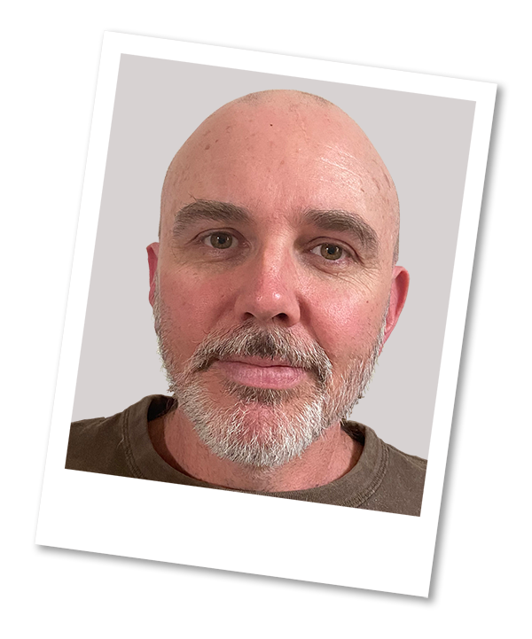

Team Profile
Member 1
Name: Matthew Howatson
Student Number: s3835344
Student Email Address: s3835344@student.rmit.edu.au
I enjoy using computers in my day to day life, and I have seen how both technology and Information Technology have developed over the past 20 years and it is exciting. I would like to be a part of the further developments in this technology and I would like to see if I can have a better understanding of "how things work".
Ideal Job
I found the job of IT Support Engineer. I fundamentally love using computers, testing things out, installing new software and reinstalling operating systems, so I feel I can put this job into "my ideal job" category. These interests are good foundations of the other attributes that are required in the job.
I could do this on a day to day basis
- Review, deploy and test new hardware and devices for end users
- Do daily backups
- Customer service and support
- Monitor and troubleshoot network performance
The skills and experience needed for this job are:
- Proved experience as an ICT Support Engineer of Desktop Support Engineer
- Well versed in ITIL
- Ability to perform Level 1 and Level 2 service requests
- Service Now ticketing system
- General desktop, hardware and device management support
- Windows O/S, Windows Server 2003 - 2016, Microsoft Office
- Experience with MDM - Citrix XenMobile, HP Storage and backup, Tape Drive support (HP Data Protector), Veeam, VMware, vSphere, Symantec Enterprise Vault, General VOiP support (Mitel and/or Polycom)
- The skills that I currently have for this position are good knowledge of Operating Systems and software applications (but probably not specific applications), excellent interpersonal skills and good written and verbal communication skills.
- To gain the skills for this position, my plan is to obtain my Bachelor of Information Technology degree from RMIT and to get a relevant internship to get direct hands on experience as a Desktop Support Engineer or Support Technician. Both of these will increase my knowledge of operating systems, software applications and remote connection systems. Additionally, I will gain experience in solving complex hardware and software issues. In the next three years I will have significantly increase my skills and knowledge in these areas. I feel that as I continue my studies and become more knowledgeable in the different areas of Information Technology, my ideas of an ideal job may change dramatically.
Personality Profile
You are analytical and objective, and like bringing order to the world around you. When there are flaws in a system, you see them and enjoy the process of discovering and implementing a better way. You are assertive and enjoy taking charge; you see your role as that of leader and manager, organizing people and processes to achieve goals.
- Ambition
- Influence
- Persistence
- Logic
- Taking Charge
- Making tough decisions
- PersistencCritiquing systems and processesLogic
- Achieving success and status
Your Key Motivators:
Learning Style
- efers to see words written down
- When something is being described, the visual learner also prefers to have a picture to view
- Prefers a time-line or some other similar diagram to remember historical events
- Prefers written instructions rather than verbal instructions
- Observes all the physical elements in a classroom
- Carefully organizes their learning materials
Member 2
Name: Benjamin Anh-Khoi Phan
Student Number: S3854890
Student Email Address: s3835344@student.rmit.edu.au
Basic Information
- I was born in Vietnam and moved to Australia in 2011 in hopes of a better education.
- I've completed the basic education, which means I graduated Year 12, before now studying in RMIT university.
- Aside from the above information, I speak 2 languages somewhat fluently; Vietnamese and English, with the latter being my second language. I also have some education in Japanese but well, let's just say I wasn't exactly top student material.
- My hobbies include playing video games, watching anime and listening to music(mostly Japanese).
Ideal Job
I've got three companies that are basically my dream job to work for any of them; Blizzard, RiotGames and Valve.
Unfortunately, none of the companies has any open positions in Australia but I also don't mind having to move overseas for the work.
All of the jobs have some harsh requirements but well, it's a dream job that I have to work towards as my goal so it's expected. I'll talk in detail about Valve since that's my most preferred place to work at.
What about this job appeals to you?
Well, it's obviously the fact that the company is at the top of the industry as a well-respected name. Not only do they have the latest software and hardware there, the work that they do are both innovative and industry-changing. Additionally, the workplace according to a lot of former and current employees are very pleasant to work at and has satisfactory work confiditons.
What skill requirements does this job have?
It's listed on the website but I'll summarise it here; Strong grasp of C++, 4+ years of profressional software development experience, strong software engineering skills, good communication and teamwork skills and finally, the ability to finish work independently.
What are the skills that you currently have compared to the requirements?
It's listed above. Though the short answer would be a hilariously depressing nothing, since I am a total newbie so the job is still quite far off in the future.
What's your plan on getting this job?
I still haven't graduated university yet so obviously that first... While I still don't have any concrete plans, or any for that matter, the general direction would probably be working for any IT-related company and steadily transition towards the gaming industry while gaining the needed experience and required skills to get the job. That's basically it for now, since I kind of need to learn the basics before thinking any further.
Personality Profile

"INFPs never seem to lose their sense of wonder. One might say they see life through rose-colored glasses. It's as though they live at the edge of a looking-glass world where mundane objects come to life, where flora and fauna take on near-human qualities. INFPs have the ability to see good in almost anyone or anything. Even for the most unlovable the INFP is wont to have pity."
- Introvert
- Intuitive
- Feeling
- Perceiving
- Listening to and helping others
- Spending time alone to regroup
- Contemplating philosophical or complex challenges
- Creatively solving complicated problems
- Following flexible schedules that allow room for change
Your Key Motivators:
Learning Style
Name: Enrique Del Carmen
Student Number: S3850685
Student Email Address: s3835344@student.rmit.edu.au
My name is Enrique Del Carmen and I am a first-year undergraduate studying a Bachelor of Information Technology at the Royal Melbourne Institute of Technology. I was born and raised in the Philippines and moved to Australia in 2014. For the past five years, I lived in Adelaide, South Australia where I graduated from both primary and high school and live some of the best years of my life. I have had a strong passion for Information Technology since I was a kid which is why I moved to Melbourne to study at RMIT to acquire the best possible education and to expand my horizons in one of the most lively cities in the world. Some of my other hobbies include music, gaming, design and a love of ancient history.
Informtion technology (IT) is a progressive and constantly evolving field, which provides a wide range of opportunities. One of the most interesting aspects of a career in IT is that you are not limited to a few options. There are many job prospects with the right key skills and knowledge including app development, data security, system development, and web design. As the industry continues to evolve alongside technology, there will always be new opportunities for professions involving IT. Furthermore, it is also fascinating to a part of a field that is revolutionising the world. What drew me to information technology as a kid was how fascinating computers are, I wanted to further my understanding about how it worked and what it could achieve, as I increased my knowledge, the more interested I became in IT. This led me to enrol in IT classes in high school where I worked on projects such as app and game development, robotics and web design. Additionally, I enrolled in a Cert III IT course where I learned practical related-work skills, obtained industry-specific knowledge and experience and gained an understanding of IT work environments.
Ideal Job
The role of a cyber security analyst is to asses, plan and perform security measures to protect the information networks and computer systems of an organisation. This occupation involves simulating attacks to determine possible vulnerabilities, ensure members of the MFB comply to the relevant security protocols and collaborate with a team to secure the IT environment of the company. One of the most appealing aspects of a position of the cyber security is the growth and possibilities, as the world becomes increasingly digitised and reliant on technology, there will be a constant demand for jobs in this industry. Furthermore, in this position, there will be constant work required to protect and improve the security of system, leading to new and engaging challenges.
From previous experience in high school and a Cert III Vet course for IT, I am building industry-related skills required for my future careers. These include programming languages such as Arduino, C++, C#, Python and Java. I am also able to install and optimise system software, run diagnostic tests, implement system software changes, construct simple relational databases, configure virtual machines and conduct basic system administration. However, I do not have the necessary attributes required for a career in cyber security and instead will use my time in RMIT to build industry-relevant skills for it.
Personality Profile
The purpose of these tests was to analyse my personality and learning style to determine my key traits and methods of learning. It can be used to further understand myself and possibly improve my approach to studying. The Myers-Briggs test stated that my personality matched certain attributes of the ENFP-Champion, ESFP-Performer and ENTP- Inventor. These personalities include traits such as energetic, passionate, fun-loving and motivated. While these characteristics describe me to a certain extent, I believe that there will never be certain personalities that define me specifically, as I will growing and developing throughout my life. The learning style test determined that my preferred method of learning is auditory. While this my preferred learning style, I can always adapt it to different methods in order to improve how I study. Finally, the big five personality traits test it analysed five key attributes including openness, conscientiousness, extraversion, agreeableness, neuroticism. Similarly, to the results of the Myers-Briggs test, I believe that traits and personalities will constantly change throughout someone’s due to certain circumstances and events.
The tests indicate that my behaviour would be highly compatible with working in a team. From the results of the Myers-Briggs test the key traits of the personality types I matched state that I will be exceptional at team work as I am energetic, passionate and fun-loving. As an auditory learning, I would be able to listen to other opinions and be open to their ideas. Furthermore, the high agreeability skill indicate that I can cooperate with group members easily. However, prior to these tests, I was already sure that my behaviour was ideal for team work as I have had to collaborate with others countless time and have always been able to work alongside each other to achieve our goals.
These tests would not greatly affect my decision making when forming teams as I am open to working with anyone. Ideally, I would prefer to work with others who posses’ similar traits, however, if we can collaborate to achieve our goals it does not matter. Even forming teams with group members with conflicting traits or contrasting methods to approach tasks, I am open to their ideas and would work towards finding common ground with them. Furthermore, if others are facing difficulties with their tasks, I would always try to assist them for us to be able to complete the task in the best standard.